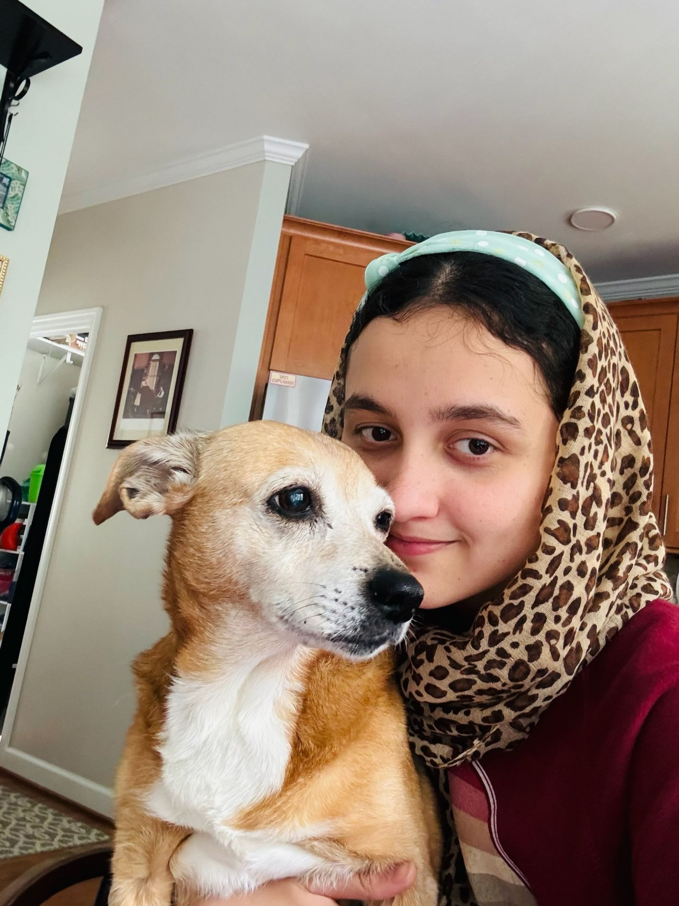

Founder and spokesperson
Tabasum
A lifelong scout and an advocate for Afghan girls. She aspires to be a neurosurgeon.
Born in Takhar Province, Tabasum was a patrol leader and a member of the Afghan National Girls Choir. She fled with her sister when the Taliban took over, then founded Afghan Scouts Durham so those stories would not disappear. She is bound for Swarthmore University, class of 2030.